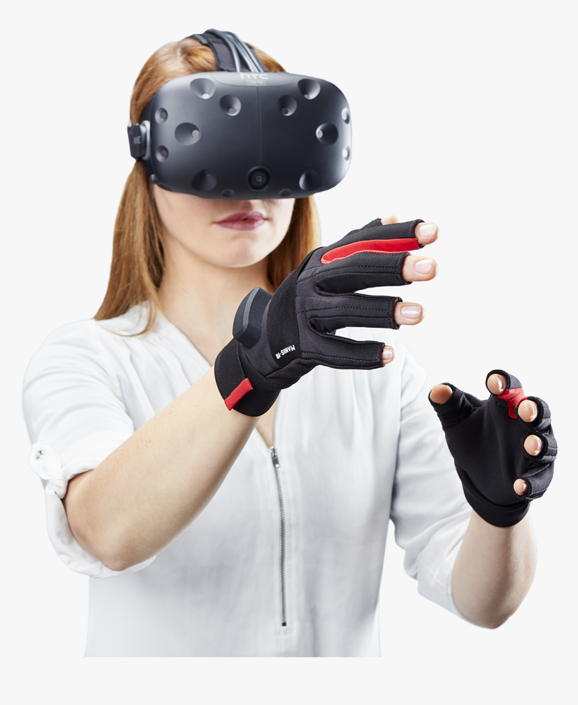

Самым распространённым средством погружения в виртуальную реальность являются специализированные шлемы/очки. На расположенный перед глазами пользователя дисплей выводится видео в формате 3D. Прикрепленные к корпусу гироскоп
и акселерометр отслеживают повороты головы и передают данные в вычислительную систему, которая изменяет изображение на дисплее в зависимости от показаний датчиков. В итоге пользователь имеет возможность «оглядеться» внутри
виртуальной реальности и почувствовать себя в ней, как в настоящем мире.
Для более реалистичного погружения в мир виртуальной реальности помимо датчиков, отслеживающих положение головы, в устройствах VR могут применяться трекинговые
системы, отслеживающие движения зрачков глаз и позволяющие определить, куда человек смотрит в каждый момент времени, а также отслеживающие телодвижения человека с целью повторения их в виртуальном мире. Такое отслеживание может
осуществляться с помощью специальных датчиков или видеокамеры.
Шлем виртуальной реальности
Современные шлемы виртуальной реальности (HMD-display, head-mounted display, видеошлем) содержат один или несколько дисплеев, на которые выводятся изображения для левого и правого глаза, систему линз для корректировки геометрии изображения, а также систему трекинга, отслеживающую ориентацию устройства в пространстве. По внешнему виду они теперь похожи на очки, поэтому их все чаще называют VR headsets (ВР-гарнитуры) или просто очки виртуальной реальности.
Шлемы являются основным компонентом VR с полным погружением, поскольку не только обеспечивают объемное изображение и стереозвучание, но еще и частично изолируют пользователя от окружающей реальности.
 MotionParallax3D-дисплеи
MotionParallax3D-дисплеи
Такие дисплеи задействуют присущий человеку механизм восприятия объема — параллакс (motion parallax). Для этого в каждый момент времени для зрителя, исходя из его положения относительно экрана, генерируется соответствующая проекция трёхмерного объекта. Перемещаясь вокруг сцены, пользователь может осмотреть её со всех сторон, при этом все объекты сцены будут перемещаться друг относительно друга.
Явление параллакса многократно усиливает восприятие объема. В отличие от 3D-кинематографа и 3D-TV, которые используют лишь бинокулярное зрение, технология MotionParallax3D позволяет пользователю рассмотреть 3D-сцену со всех сторон, как если бы все ее объекты были реальны. Смещение зрителя относительно экрана, нарушающее эффект объема в 3D-кино, в системе MotionParallax3D эффект только усиливает.
Система, использующая механизм параллакса, должна улавливать мельчайшие движения головы пользователя и отслеживать их с высокой скоростью и точностью, чтобы мозг не фиксировал искажения геометрии объектов, вызванные запаздыванием изменения изображения.
Многоканальная акустическая система позволяет производить локализацию источника звук а, благодаря чему пользователь может ориентироваться в виртуальном мире с помощью слуха. Наиболее прогрессивным решением в VR звуке является "пространственное аудио", которое предназначено для имитации высоты тона, громкости, уровня реверберации и других звуковых сигналов, которые мозг ожидает во время погружения. С нашим слухом мы можем ощутить то, что происходит в тех направлениях, вокруг нас, где мы не можем видеть, например визг шин автомобиля позади нас, и соответственно среагировать на это.
а, благодаря чему пользователь может ориентироваться в виртуальном мире с помощью слуха. Наиболее прогрессивным решением в VR звуке является "пространственное аудио", которое предназначено для имитации высоты тона, громкости, уровня реверберации и других звуковых сигналов, которые мозг ожидает во время погружения. С нашим слухом мы можем ощутить то, что происходит в тех направлениях, вокруг нас, где мы не можем видеть, например визг шин автомобиля позади нас, и соответственно среагировать на это.
В данный момент одно из интереснейших разработок является Spatial audio, которая позволяет программистам создавать контент, звуки которого могут исходить из любого ветра, звук воды, доносящейся из реки у ваших ног и остальные разнообразные шумы окружающего мира.
Перчатки виртуальной реальности
Такие перчатки оснащаются датчиками, позволяющими отслеживать движения кистей и пальцев рук. Технически это может быть реализовано различными методами: с использованием оптоволоконных кабелей, тензометрических или пьезоэлектрических датчиков, а также электромеханических приспособлений (таких как потенциометры). Например, ученые из компаний EPFL и ETH Zurich разработали ультралегкие перчатки (весом менее 8 граммов на каждый палец и толщиной всего лишь 2 мм). Они обеспечивают «чрезвычайно реалистичную тактильную обратную связь и могут быть запитаны от аккумуляторов, благодаря чему обеспечивается беспрецедентная свобода движения».
Костюм виртуальной реальности
Этот костюм должен отслеживать изменение положения всего тела пользователя и передавать тактильные, температурные и вибрационные ощущения, а в комбинации со шлемом — зрительные и слуховые.